Voodoo Vintage
Voodoo Vintage is an identity design for a vintage clothing store in Austin, Texas that I designed my Sophomore year. I researched voodoo symbols and illustration styles and developed my identity based on voodoo symbols. This project consisted of branding, merchandise, letterhead, and business card design.
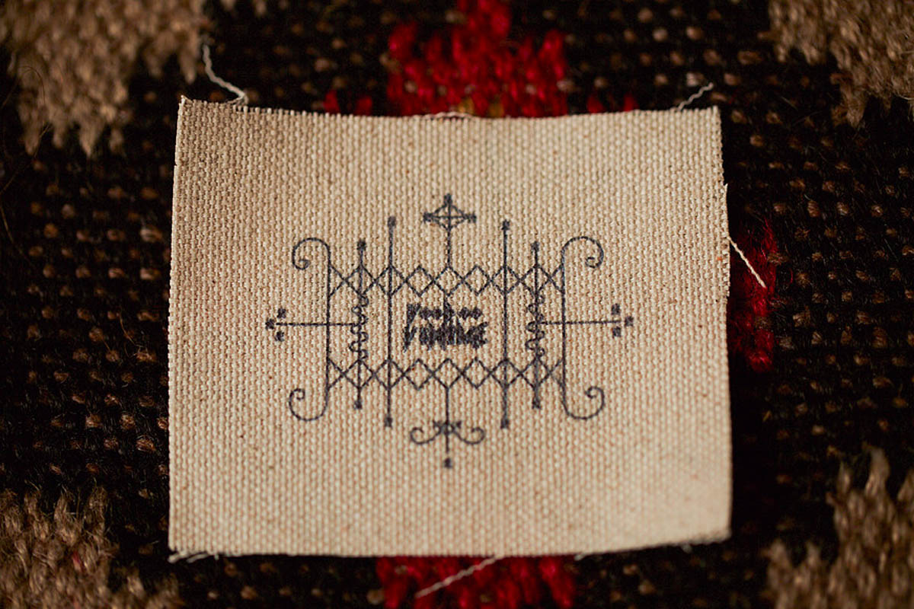
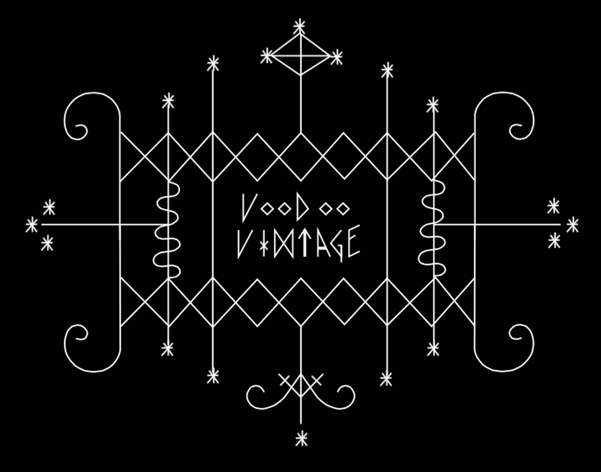
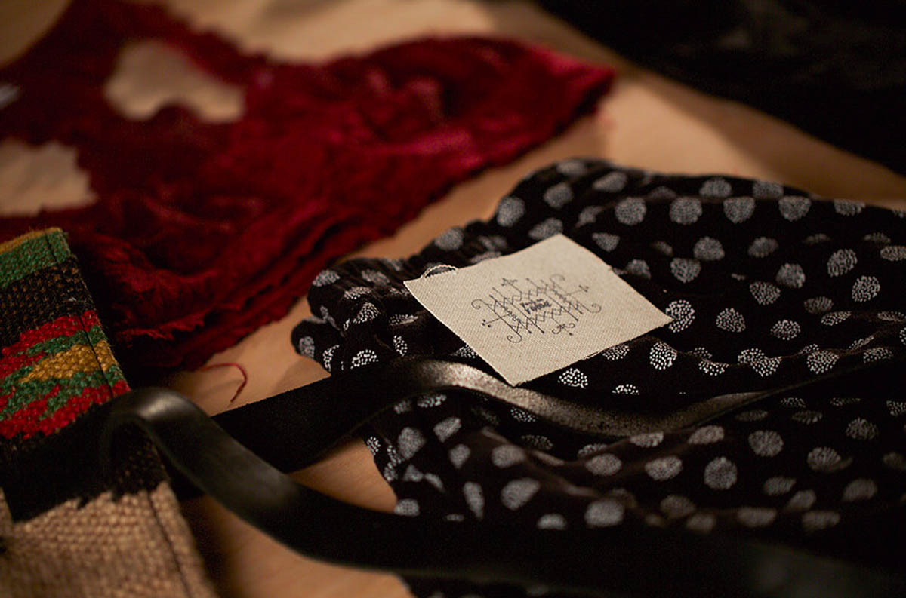
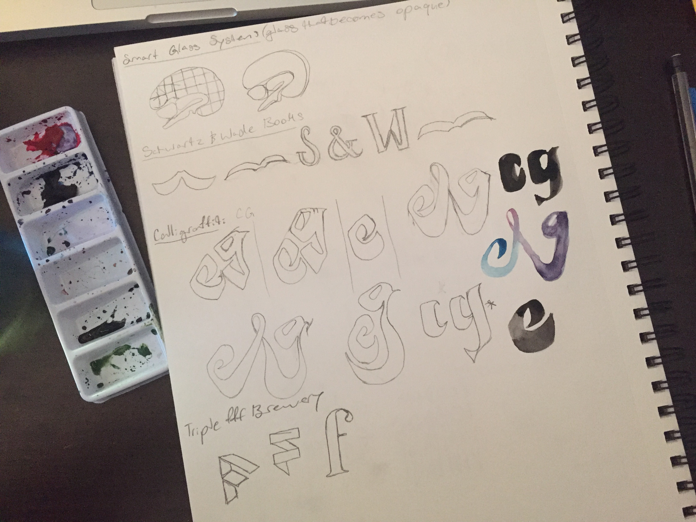
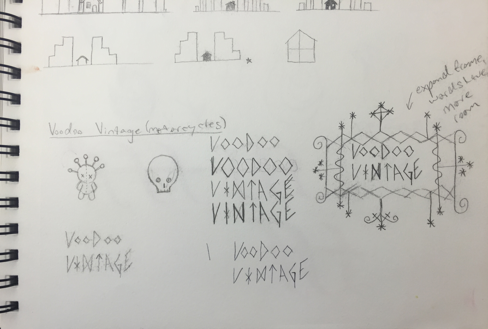
 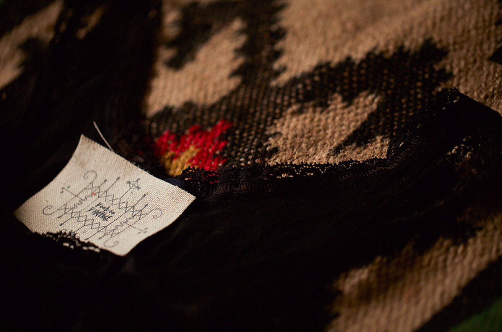
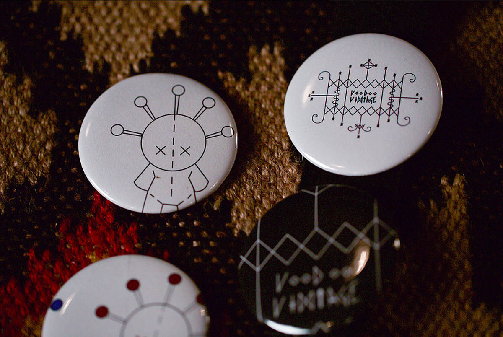
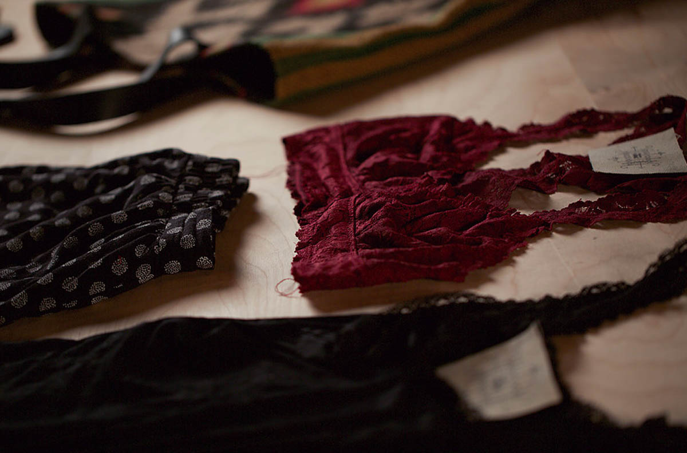
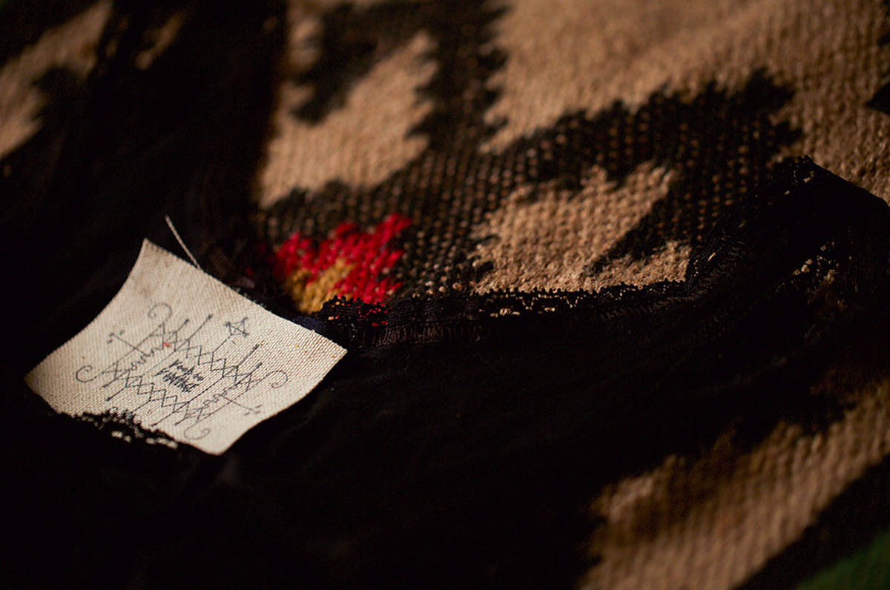
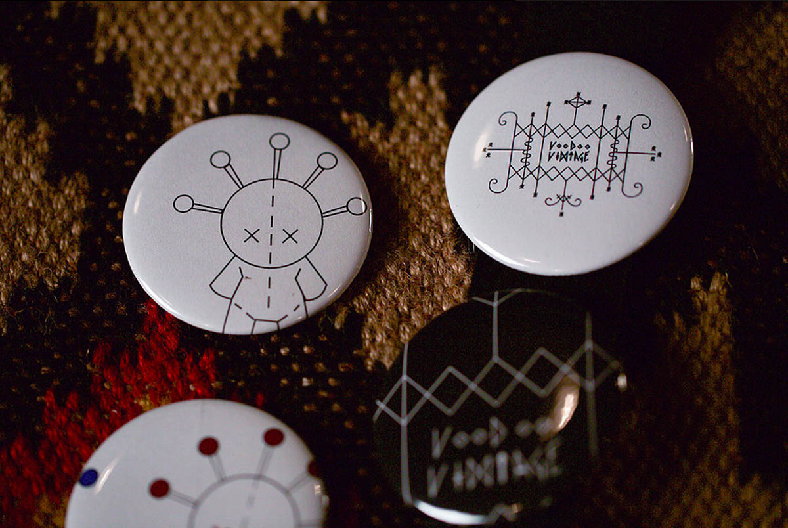
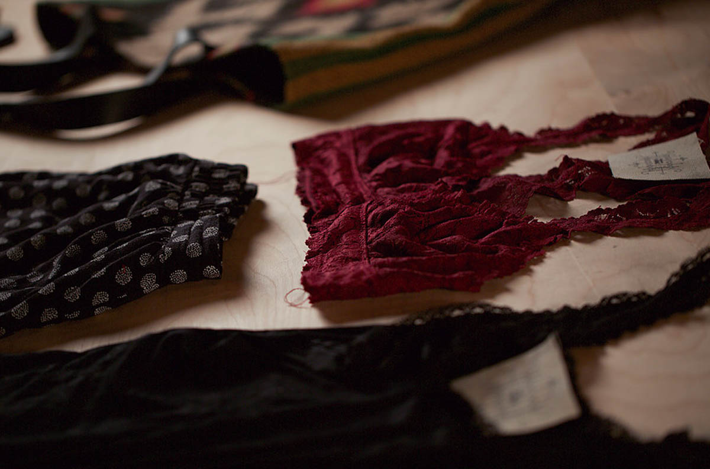
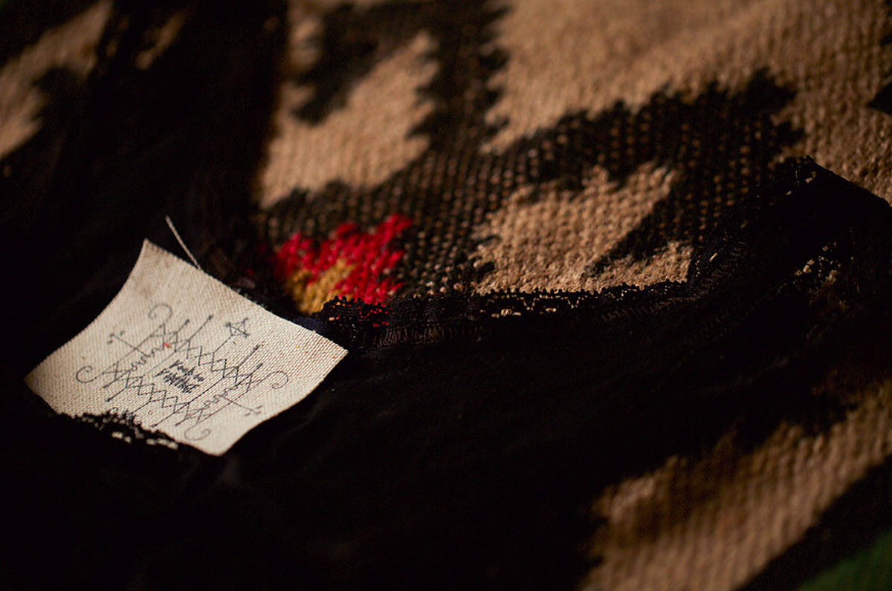
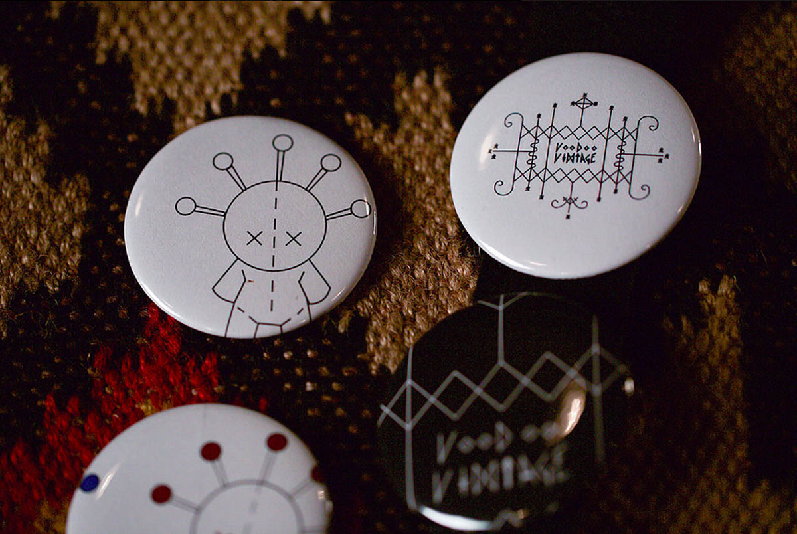
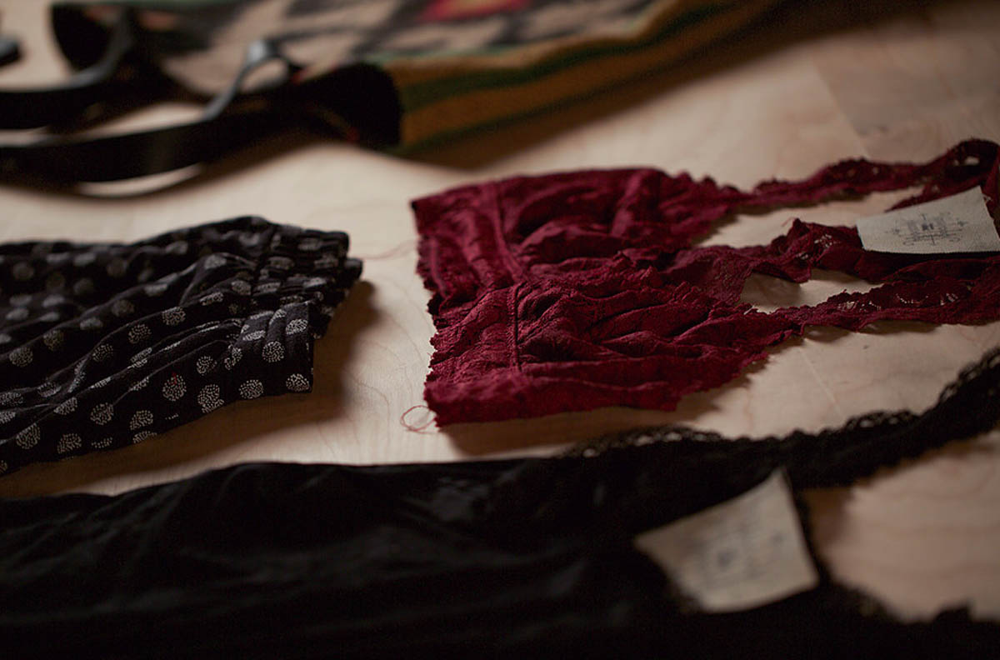